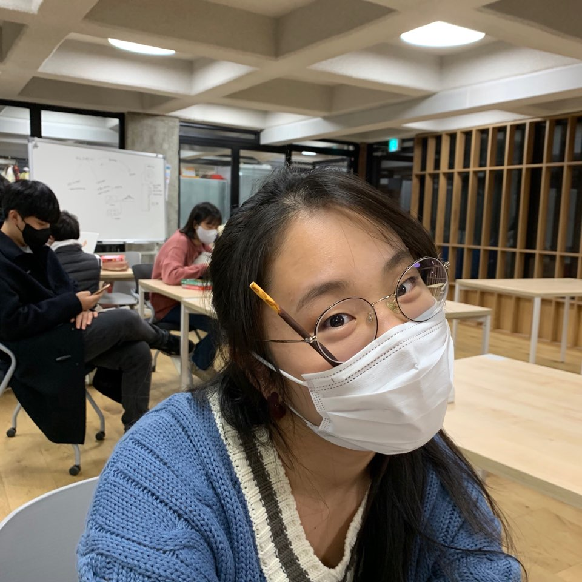
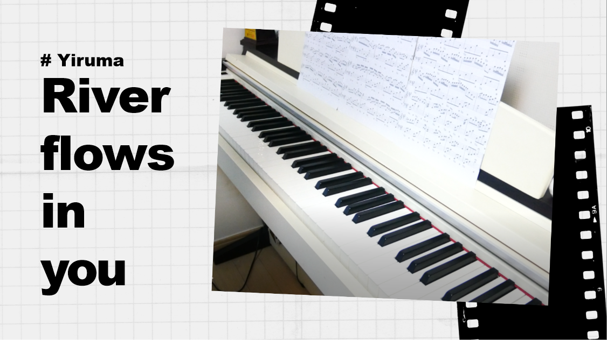
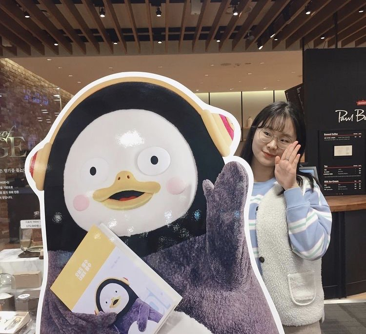
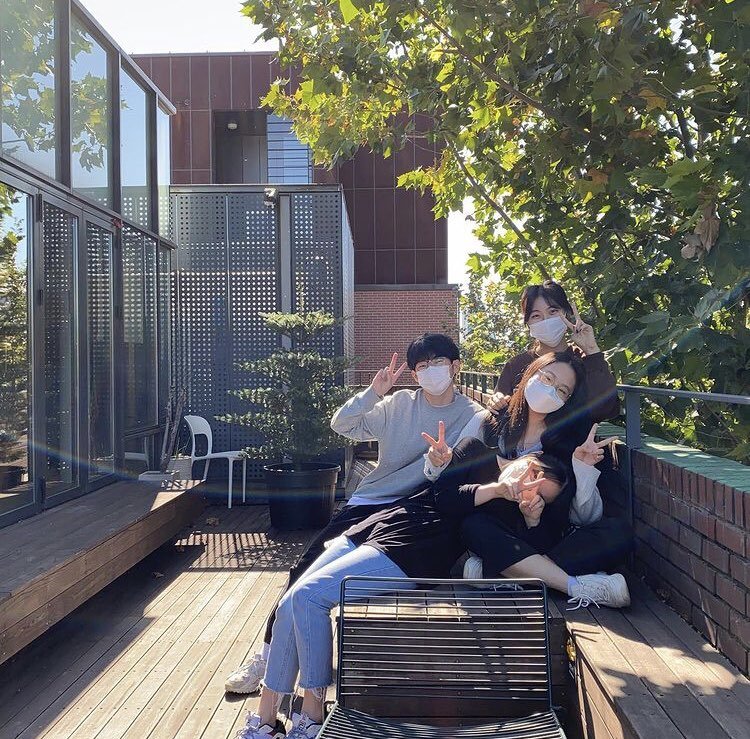

Intro
안녕하세요
이 포트폴리오의 주인 박우정이라고합니다
우선 저의 포트폴리오에 찾아와주셔서 감사합니다 :)
그럼 저를 소개할게요-!
1_우선 저는요,
저는 우정이라고 합니다.
항상 밝고 긍정적인 성격으로 살아가고 있어요
이제까지 거의 대부분 밝게 살아온 것 같아요
이전부터 다니던 고등학교부터 거꾸로캠퍼스를 경험하고
성인이 되기까지 웃음이 많고 웃음을 주는 사람으로 살아왔어요
앞으로도 그럴 예정이에요! ㅎㅎ 처음에 친해지는 것은 어렵지만
친해지는 순간 모든 것을 보여주는 사람이랍니다.

2_좋아하는 것
제가 좋아하는 것을 이야기해볼게요
저는 우선 노래 듣는 것을 좋아해요 트로트나 K-pop을 좋아합니다
요즘에 좋아하는 노래는 장민호-역쩐인생이라는 노래를 좋아해요
가사가 아주 좋더라고요 ㅎㅎ 또한 동생이랑 이야기하는 것을 좋아해요
동생이랑 이야기할 때 제일 나답다고 생각이 들어요 :)
피아노를 연주하는 것을 굉장히 좋아합니다
피아노를 칠 때면 아무 생각이 안 들고 집중할 수 있거든요

3_성장에 대하여
고등학교를 입학할 때 자퇴할 것이라고는 상상도 못했어요
그저 남 이야기라고 생각했던 저는 17살에 자퇴를 했습니다
부모님의 추천으로 거꾸로캠퍼스에 입학을 하고 '성장'이라는 것을
생각하게 됐어요
왜냐하면 제가 거캠에 들어오고 성장을 했다고 느꼈기 때문이에요
한 학기, 모듈이 지나면서 발표와 팀 활동에서의 소통이 많이
성장했어요
성장을 하면서 좋기보다는 아팠지만 많이 중요한 것이기 때문에
2021년을 시작하면서 앞으로의 제 성장이 기대됩니다

4_나의 문제해결
저희 팀은 유기견 안락사 문제와 유기견 입양률에 대해 다룹니다
앞의 프로젝트에서 보실 수 있으셨다시피 유기견의 입양률을 높이려고
애쓰고 있습니다
유기견 문제를 다루면서 사회의 문제에 한 발짝 다가가고 한 문제를 깊게
탐구하는 방법을 알게됐어요
문제 해결을 하면서 팀 활동, 소통을 하는 데 있어서 더 성장한 거
같아요
또한 이런 문제들이 얼마나 심각한지 그리고 또 얼마나 많은지
알게되었습니다.
유기견 문제가 해결되기까지 조금이라도 도움을 주고 싶어요

5_순간을 소중히
Cherish of moments 순간을 소중하게
저의 인생 좌우명인 'Cherish of moments'의 뜻입니다
살다 보면 순간을 그냥 지나쳐 버리는 경우가 다반수인 거 같아요
그래서 순간을 소중하게 생각하지 않고 항상 후회하게 돼요
후회하면서 생각난 게 바로 순간을 소중히 하자는 것이었어요
이 좌우명은 그냥 제가 지은 것이랍니다 :) 하하
모든 순간을 소중히 하면서 살아가야 한다고 항상 생각이 들어요
배우는 순간, 만나는 순간, 활동하는 순간을 소중히 할 거예요
앞으로의 모든 순간을 기대하며 포트폴리오 마침.